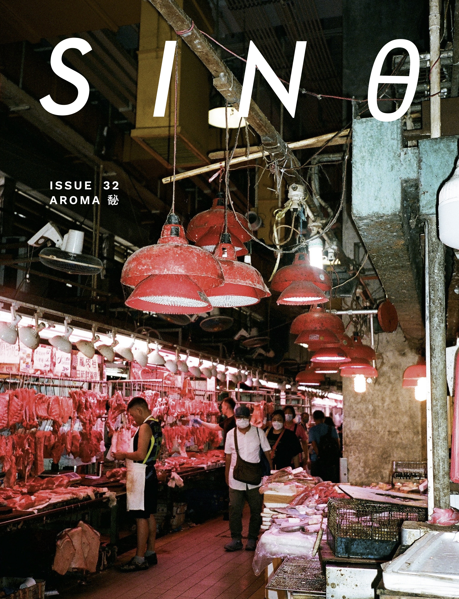

ORDER SINθ #32 NOW
After the storm, the morning grass is fresh, green. Mist rises. You spray perfume on the inside of your wrist. Somewhere, a fire is sizzling. The last in our five-senses series is “AROMA 馝”, an issue unraveling scent in all its pleasant and odious manifestations. What captures your nose?
This issue features the winners of our sixth annual writing contest, as well as a selection from the shortlist; keep an eye out for other shortlisted works in sinθ #33. Thank you to Kim Fu for serving as our fiction judge and Mary Jean Chan for serving as our poetry judge this year.
- Lingnan painter Anita Yan Wong’s three portraits of birds fuse traditional Chinese techniques with contemporary methods.
- Jennifer Fu’s photo “Sleeping Belly” captures dappled sunlight, while Beilin Xu’s illustration “A Picnic with Goopy and Pinpin” presents a sun-kissed picnic.
- Poet Susan L. Lin tells an anecdote of a gleeful interaction with an ode to a playground game in “My Goose is Cooked.”
- Incense rises in Staff Contributor Juliette Wu’s evocative, richly detailed illustration.
- Staff Contributor Chi S. meets musician Bolis Pupul in London to discuss growing up diasporic in Europe and the bittersweet notes of identity on Pupul’s debut album.
- Publicity Editor Janelle Li and writer Autumn Chen discuss the interactive fiction space and its potential to reach a plethora of diverse audiences.
- Staff Contributor Chi S. chats with 2022 sinθ contest winner Daisuke Shen about Shen’s short story collection Vague Predictions and Prophecies, with its explorations of religious allegory and futurism.
- For our student spotlight, Staff Contributor Juliette Wu interviews Sharon Zhang, talking through how Zhang showcases emotions of their work through different fabric mediums, translations, and power dynamics.
- From the fiction shortlist, Helen Chen’s “Grandma’s Armpits” juxtaposes youth and aging with a dignified portrayal of hardship; packed like canned fish, Kristine Chang’s “Sardine Dream” pieces together resentment, vulnerability, and thoughtfulness.
- From the poetry shortlist, Shrike Wong’s “Mayfly Morendo” beautifies an insect’s purpose as a bearer of life.
- Fiction contest winner Josephine Wu’s “Manicure” grapples with identity and grief, exploring nail removal and the enduring connection between a mother and a daughter.
- Poetry contest winner Audrey Lin’s “Garden Ghazal” traces nature’s impact on a garden’s stages of harvest.
Cover by Junior Editor Stella Li.